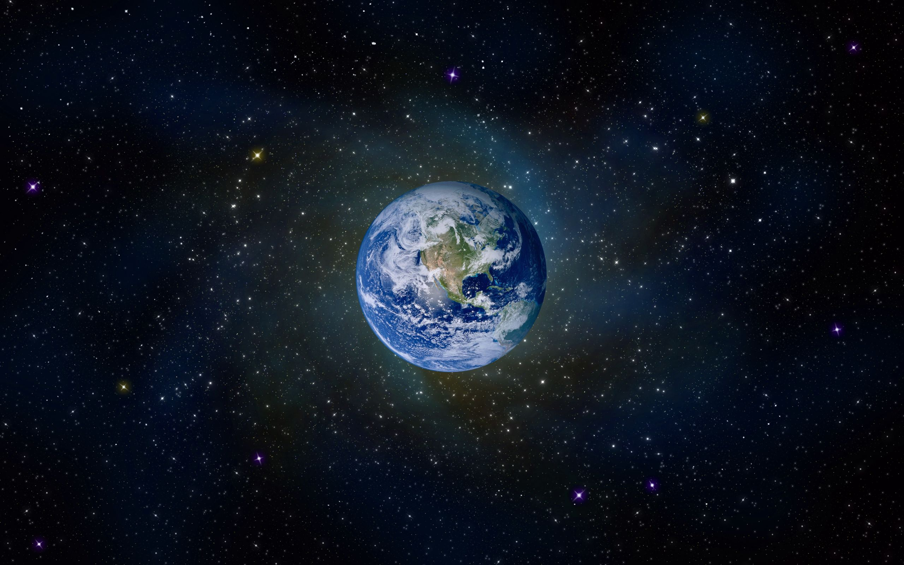

What is the Fermi Paradox?
The Fermi Paradox is one the most fascinating and mind boggling paradoxes out there.
It's named after Italian-American physicist Enrico Fermi, who asks the simple question:
If there are billions of planets that can support life and billions of years for life to develop,
then why haven't we seen any signs of alien life? Where is everyone?
It is a question that even the brightest of minds cannot answer.
There are many theories out there that suggest what might be the reason that we haven't come in contact with aliens yet, but it seems that no one can agree on the same thing. So is there alien life out there or are we truly alone in the empty and vast universe?
